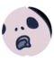
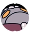
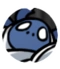
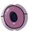
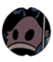
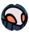

| Monstres | |
|---|---|
| Faux Chevalier | |
|  | Maggot |
| Dames Mantes | |
|
Guerrier de l'âme |
|  | Maître de l'âme |
|
Carcasse Magnifique |
| Veilleur | |
| Le Collectionneur | |
| Défensseur Bousier | |
|  | Protecteur Blanc |
|  | Flukemarm |
| Gardien de cristal | |
| Nosk | |
|
Mawlek Maussade |
| Vaisseau Corrompu | |
|  | Chevalier de la Ruche |
|  | Seigneur Traîte |
| Obloble | |
| Dompteur de dieux | |
| Zote le Redoutable | |
| Grim maître de la troupe | |
| Hornet | |
| Hollow Knight | |
| Ombre |